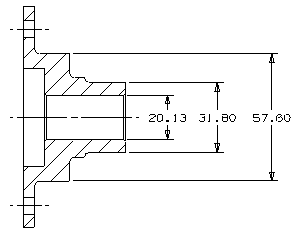
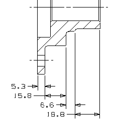

Dimension the diameters on the right (top) side of the part.
Do not use the cylindrical style — just dimension the vertical distance between end points (which means you will not see the diameter symbol in the dimension).
Use two place precision for all of these dimensions (but do not change the global precision which is currently set at a one place precision).
Line up the origins horizontally and associate them.

|
Tip |
Work from the smaller diameter to the larger diameters. |
Dimension the end points on these edges, using one place precision.
|
Tip |
Consider creating these as chained, horizontal dimensions. Make sure to set the Narrow option on the Dimensions tab in the Annotation Style dialog box to display the chained dimensions correctly. |
